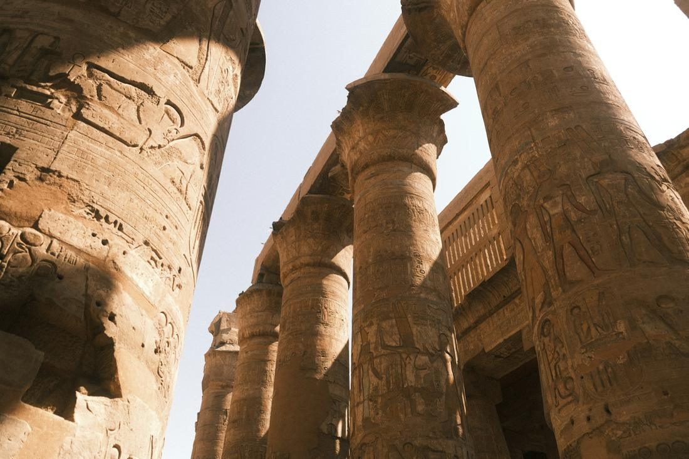
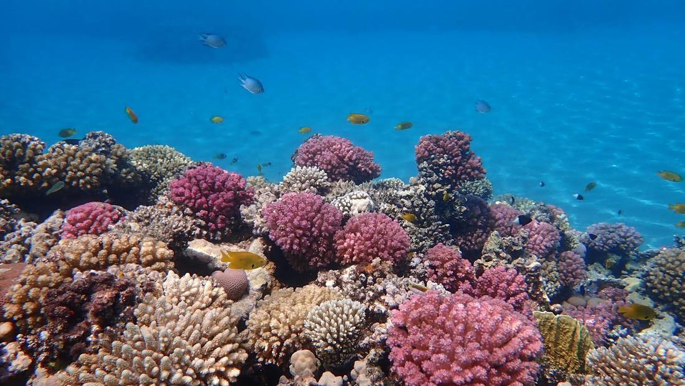

Ancient pyramids, a legendary river, and coral reefs — Egypt delivers history and paradise in one trip.
Egypt is the trip that turns lifelong history buffs into first-time visitors and first-time visitors into lifelong history buffs. There's something almost unbelievable about standing in front of the Great Pyramid of Giza, a structure older than recorded memory in most of the world, and realizing it's exactly as massive and improbable in person as it looks in photos. As your travel advisor, this is a destination I plan with real care, because it rewards travelers who go beyond just the pyramids and let the whole country unfold.
What I love about Egypt is how much it offers beyond the ancient sites — a slow cruise down the Nile past palm groves and temple ruins, warm Red Sea water full of coral and color, and cities that have been continuously inhabited for thousands of years. It's a country that layers deep history with genuine relaxation, so a well-built itinerary never feels like a rushed museum tour. It's a trip that photographs beautifully and leaves you with stories for years.
The trick is pacing Cairo, the Nile, and the coast so you get all three flavors of Egypt without exhausting yourself — and that's exactly the kind of itinerary I build for my clients. Here are 3 excursions I love arranging for travelers headed to Egypt.

This is the essential Cairo day, and it's the one that gets people booking their Egypt trip in the first place. You'll start at the Giza Plateau, standing beneath the Great Pyramid of Khufu and its two sister pyramids, with the Great Sphinx crouched nearby, its lion's body and human face still watching over the desert after thousands of years. It's an almost surreal moment — these are structures you've seen in textbooks your whole life, and suddenly they're right in front of you, close enough to touch. From Giza, I love routing travelers to Sakkara, home to the Step Pyramid of Djoser, considered the earliest of Egypt's great stone pyramids and the true starting point of pyramid-building itself — it's quieter than Giza and gives a fascinating sense of how the whole idea evolved. To round out the day, a stop at the Egyptian Museum (or the newly opened Grand Egyptian Museum, depending on timing) puts you face to face with treasures pulled straight from these tombs, including artifacts connected to Tutankhamun. It's a full, rich day that moves from monumental scale down to intricate, gold-covered detail, and it's the perfect anchor for any Egypt itinerary.

If Giza is Egypt's headline act, a Nile cruise between Luxor and Aswan is where the story deepens. This excursion has you gliding down the river on a multi-day cruise, waking up each morning to a new stretch of palm groves, farmland, and temple ruins along the banks. In Luxor, you'll explore the Valley of the Kings, where pharaohs including Tutankhamun were buried in tombs cut deep into the desert cliffs and decorated with still-vivid painted hieroglyphs, and Karnak Temple, an enormous complex of towering columns and obelisks that took nearly 2,000 years to build. As the cruise continues toward Aswan, I love including a stop at Philae Temple, dedicated to the goddess Isis and rebuilt on its own island after being relocated to save it from flooding, along with time to see the Aswan High Dam and the colorful Nubian villages along the riverbanks. There's something genuinely special about experiencing these sites from the water, watching daily river life continue exactly as it has for centuries, rather than rushing between them by bus. It's a slower, richer way to see ancient Egypt, and one of my favorite multi-day additions to a Cairo-based trip.

After days of temples and desert heat, I love sending travelers to Egypt's Red Sea coast to unwind, and this is the excursion that does it. Based in a resort town like Hurghada, the highlight is snorkeling or diving straight off the coast, where warm, exceptionally clear water reveals coral gardens in shades of pink, purple, and gold, dotted with reef fish, clownfish, and the occasional sea turtle drifting past. The Red Sea is considered one of the best diving and snorkeling destinations on Earth, and you don't need to be an experienced diver to enjoy it — a simple snorkel and mask is enough to see the color and life just beneath the surface. Beyond the reef, I like building in time for a boat trip out to quieter offshore reef spots, a relaxed beach afternoon, and maybe a sunset dinner right on the water to close things out. It's the perfect counterbalance to a history-heavy Cairo and Nile itinerary, giving travelers a few days to actually slow down before heading home, and it's an easy way to turn a purely historical trip into a full vacation with both culture and coastline.
Prefer to plan together? I'll build your custom package. Already know what you want? Book instantly through my travel portal.